| 2nd Chiltern Scout Group | ||
|---|---|---|
 |
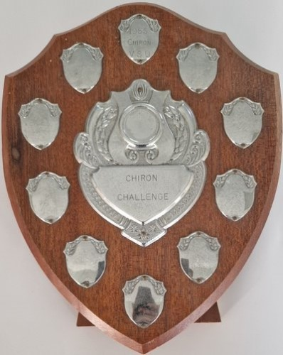 | 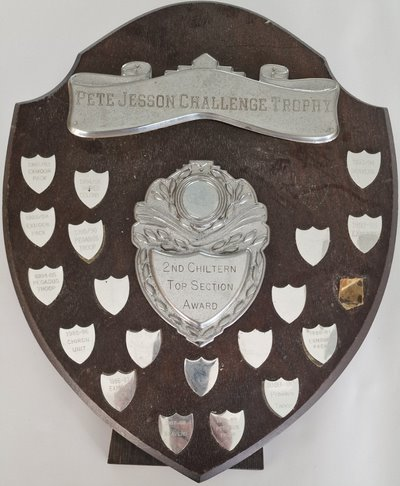 |
| Chiltern Exmoor Pack top six annual shield. Awarded to Red six in 1990,1991 & 1992 Awarded to Blue six in 1991 & 1993 Awarded to White six in 1994 |
Chiron challenge badge. Awarded in 1985 to Chiron Venture Scout Unit |
The Pete Jesson challenge trophy - The 2nd Chiltern top section award. The plaques read: 1982-83 Exmoor pack, 1983-84 Exmoor pack, 1984-85 Pegasus troop, 1985-86 Chiron unit, 1986-87 Exmoor pack, 1987-88 Beavers, 1988-89 Pegasus troop, 1989-90 Pegasus troop, 1990-91 Exmoor pack, 1992-93 Beavers, 1993-94 Beavers, 1994-95 Shires colony, 1995-96 Pegasus troop. |
| 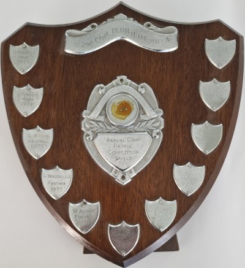 |  |
|
| 2nd Chiltern (Luton) Annual camp patrol competition shield. The plaques read: (D Robbens, Hawk, 1973), (D Robbens, Hawk, 1974), (G Jesson, Kestrel, 1975), (G Woodhouse, Panther 1977), (M Jesson, Panther, 1978) |
2nd Chiltern star games (1980) Winners award | |
| Luton Air Scout Group | ||
 |
||
| Luton Air Scouts Best Six Of The Year award Awarded to green six in 1996 Awarded to Red six in 1997 |
||
| Miscellaneous trophies and awards | ||
| 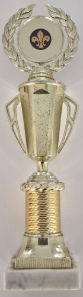 | 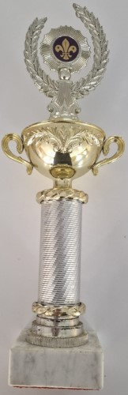 | 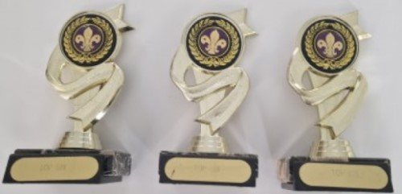 |
| Top six awards | ||
| 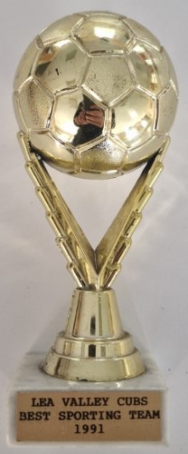 | 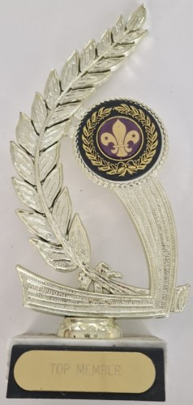 | 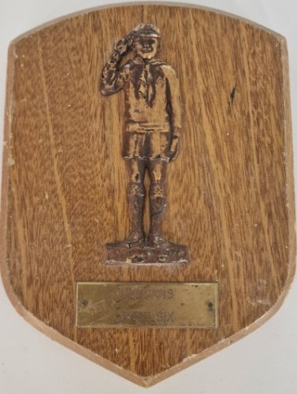 |
| Lea valley cubs best sporting team 1991 | Top member award | Vulcans best six award |
| 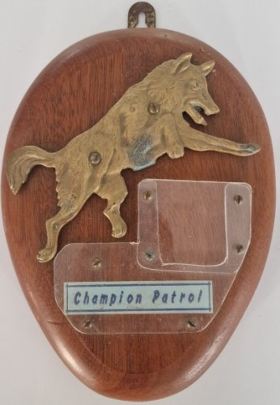 | 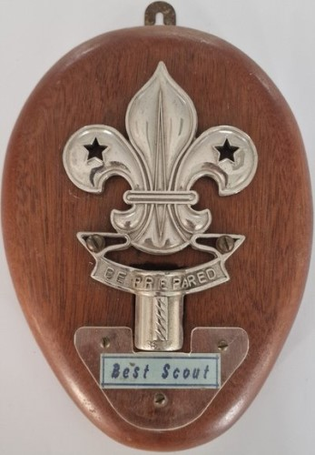 |  |
| Champion patrol award | Best scout award | 4 of the Lea valley district swimming gala awards |
| 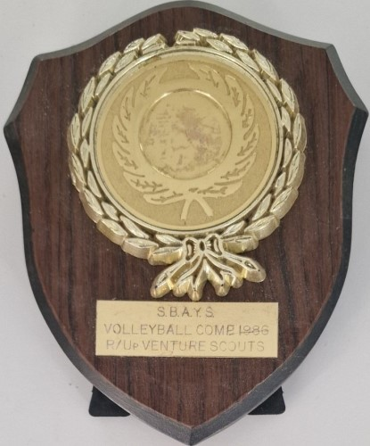 | 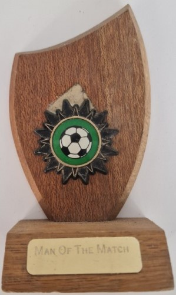 | 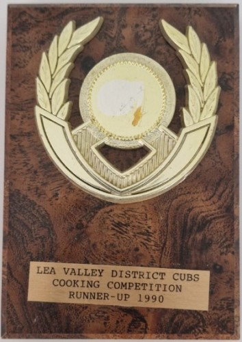 |
| S.B.A.Y.S volley ball competition 1986 runners up award | Man of the match award | Lea valley district cub scout cooking competition, Runners up award 1990 |
| 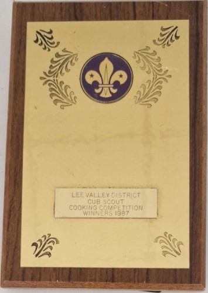 | 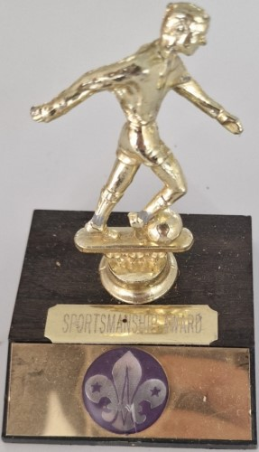 | |
| Lea valley district cub scout cooking competition, winners award 1987 | Sportsmanship award | |